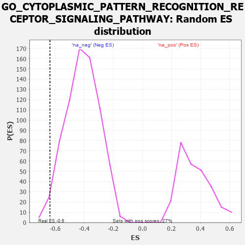

| | | Dataset | 7d |
| Phenotype | NoPhenotypeAvailable |
| Upregulated in class | na_neg |
| GeneSet | GO_CYTOPLASMIC_PATTERN_RECOGNITION_RECEPTOR_SIGNALING_PATHWAY |
| Enrichment Score (ES) | -0.63582784 |
| Normalized Enrichment Score (NES) | -1.5413754 |
| Nominal p-value | 0.016371077 |
| FDR q-value | 0.14512283 |
| FWER p-Value | 1.0 |
Table: GSEA Results Summary
 Fig 1: Enrichment plot: GO_CYTOPLASMIC_PATTERN_RECOGNITION_RECEPTOR_SIGNALING_PATHWAY
Fig 1: Enrichment plot: GO_CYTOPLASMIC_PATTERN_RECOGNITION_RECEPTOR_SIGNALING_PATHWAY
Profile of the Running ES Score & Positions of GeneSet Members on the Rank Ordered List
| PROBE | GENE SYMBOL | GENE_TITLE | RANK IN GENE LIST | RANK METRIC SCORE | RUNNING ES | CORE ENRICHMENT | | 1 | C1QBP | | | 2189 | 0.278 | -0.2536 | No |
| 2 | PUM2 | | | 2627 | 0.209 | -0.2923 | No |
| 3 | CLPB | | | 2706 | 0.198 | -0.2867 | No |
| 4 | PHB2 | | | 2712 | 0.197 | -0.2721 | No |
| 5 | TAB1 | | | 3351 | 0.097 | -0.3448 | No |
| 6 | IFIH1 | | | 3919 | 0.006 | -0.4155 | No |
| 7 | DDX58 | | | 3998 | -0.007 | -0.4248 | No |
| 8 | CASP8 | | | 5678 | -0.369 | -0.6071 | Yes |
| 9 | TKFC | | | 5854 | -0.419 | -0.5966 | Yes |
| 10 | UBB | | | 6090 | -0.503 | -0.5871 | Yes |
| 11 | BIRC3 | | | 6366 | -0.603 | -0.5749 | Yes |
| 12 | UBE2N | | | 6407 | -0.621 | -0.5317 | Yes |
| 13 | UFD1 | | | 7157 | -1.040 | -0.5451 | Yes |
| 14 | CYLD | | | 7333 | -1.206 | -0.4735 | Yes |
| 15 | UBC | | | 7410 | -1.274 | -0.3842 | Yes |
| 16 | TRAF6 | | | 7818 | -2.157 | -0.2679 | Yes |
| 17 | XIAP | | | 7947 | -3.696 | 0.0030 | Yes |
Table: GSEA details [plain text format]

Fig 2: GO_CYTOPLASMIC_PATTERN_RECOGNITION_RECEPTOR_SIGNALING_PATHWAY: Random ES distribution
Gene set null distribution of ES for GO_CYTOPLASMIC_PATTERN_RECOGNITION_RECEPTOR_SIGNALING_PATHWAY